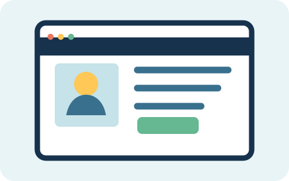

Accesibilidad web

Una página accesible es más fácil de utilizar para más personas. Para empezar, conviene organizar el contenido con títulos y escribir descripciones para las imágenes.
Prueba tu página
Comprueba que los enlaces expliquen adónde llevan y que puedas recorrer la página con el teclado. Estos pequeños pasos ayudan a encontrar cosas que se pueden mejorar.